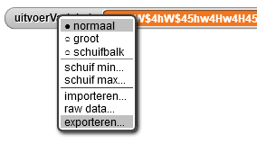

Caesar Cipher Project
A Caesar cipher (or shift cipher) is a simple encryption method. Each letter in what's called plaintext (the un-encrypted text) shifts some fixed number of positions along the alphabet. After Z, the shifting "wraps around" and goes back to A. For example, “ABCZ123abcz” shifted by 4 would become “EFGD567efgd”. This technique is named after Gaius Julius Caesar, who ruled Rome 49-44 BC and used encryption in his correspondence.
In this project you will develop a program that uses a shift cipher that does not wrap around, but instead uses other characters like [ and { to follow Z and z.
Internally, computers store keyboard characters (capital and small letters, punctuation marks, space, digits, symbols, and so on) and others (like Enter, or Command-Z, or Shift-Ctrl A) as numbers—binary sequences. The computer industry standard numbering is called Unicode. For most purposes, even programmers and web developers don't need to know what number represents what character, but sometimes we do need to specify a character by its number. This table shows the Unicode for some of the keyboard characters.

The unicode of block reports the number that is used for a particular character:
The unicode as letter block reports the character that a given Unicode number represents:
You can safely assume that shifting any set of text characters a reasonable distance will result in a set of printable characters, which may include non-alphanumeric (not letter or digit) characters.
For example, if we use a shift of 4 to encrypt:
Invasion of Normandy is on 6 June 1944
it becomes:
Mrzewmsr$sj$Rsvqerh}$mw$sr$:$Nyri$5=88
- Which character in ciphertext (the coded version) represents a space in the plaintext?
- In this code, 1 becomes 5, and 4 becomes 8, clearly showing the shift of 4. What does 9 become?
- On paper, use a shift cipher to encrypt and decrypt a short message to get a feel for how this cipher works.
- Develop an algorithm for this procedure that works for any input text and any shift value.
- Try to code the shift cipher on your own in Snap! using the algorithm you have developed. If you get stuck, look at this page for hints on how to proceed.
- Now test your work. Agree with your partner on a shift value for the encryption. Then use your program to encrypt a secret message and e-mail it to your partner. Then let your partner decrypt your message by using the program to reverse the shift.
You can extract the encrypted messages from the Snap! interface by right-clicking on the
variable that holds the encrypted message and selecting the “Export” option which will download a
text file to your computer which then you can copy/paste.

- Implement a version of the Caesar Cipher that not only shifts the characters but also wraps them round the alphabet when the end of the alphabet is reached. You may wish to restrict your alphabet to the set of printable characters given above in the Unicode table.
- If you came across a long message encrypted in the Caesar Cipher but did not know the shift value, what are some ways you might be able to break the system and decrypt the message? Discuss the weaknesses of a Caesar Cipher and how it is prone to breaking.
- Do some research on other types of ciphers used historically. Especially read about the Vigenere Cipher which was used extensively in communicating sensitive information during World War 2.
- Create your own encryption/decryption scheme and implement it in Snap!.